Gautam Singh
CV · X · LinkedIn · Github · Scholar
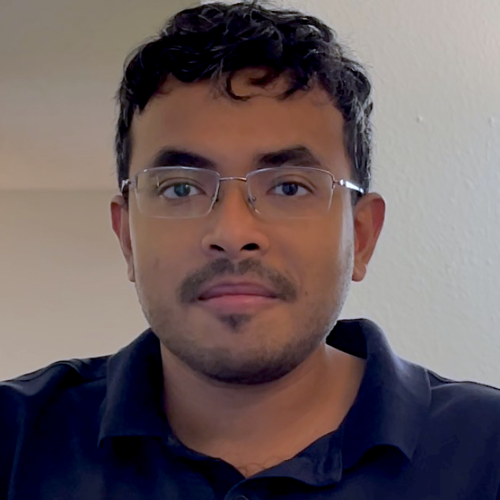ML Postdoctoral Research Staff @ Lawrence Livermore National Laboratory (LLNL)
I am interested in making generative models & large language models capable of human-like out-of-distribution generalization and learn sample-efficiently. I am also interested in applications of machine learning for code generation/understanding and addressing difficult scientific challenges.
In the past, I held internships at NVIDIA Research and Amazon, and I spent three years working at IBM Research. I obtained a B.Tech. at IIT Guwahati and a Ph.D. in Computer Science at Rutgers University, advised by Prof. Sungjin Ahn.
 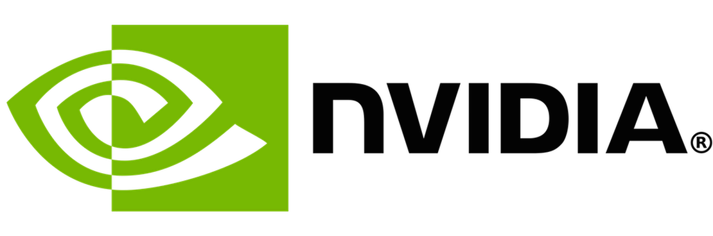
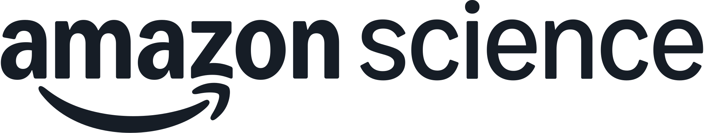
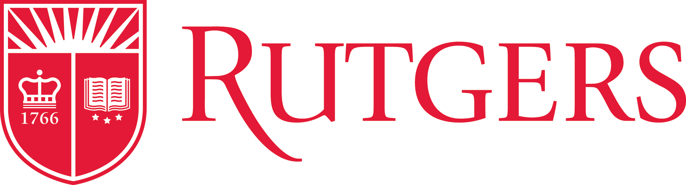
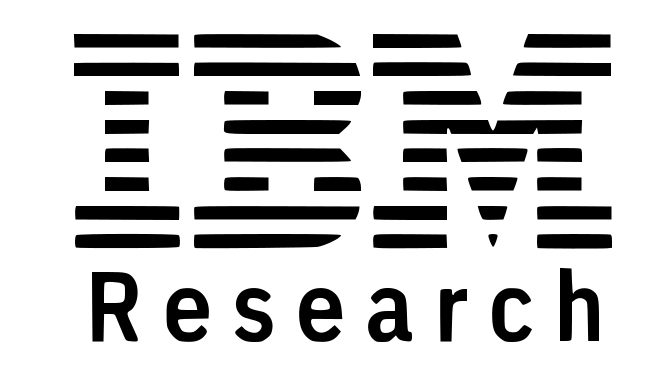
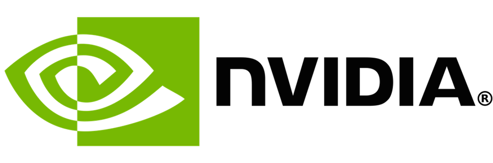
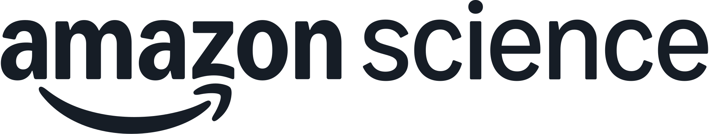
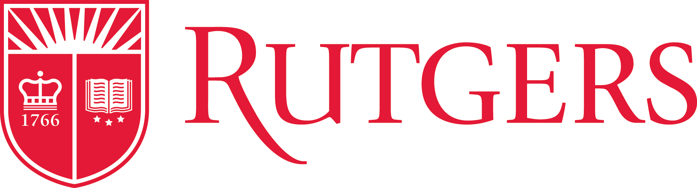
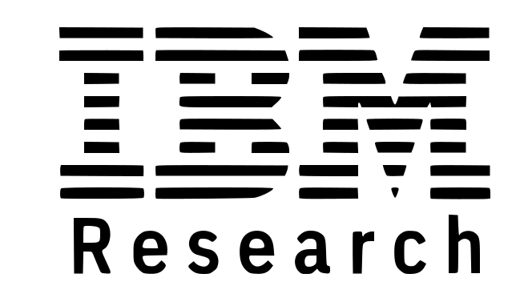

 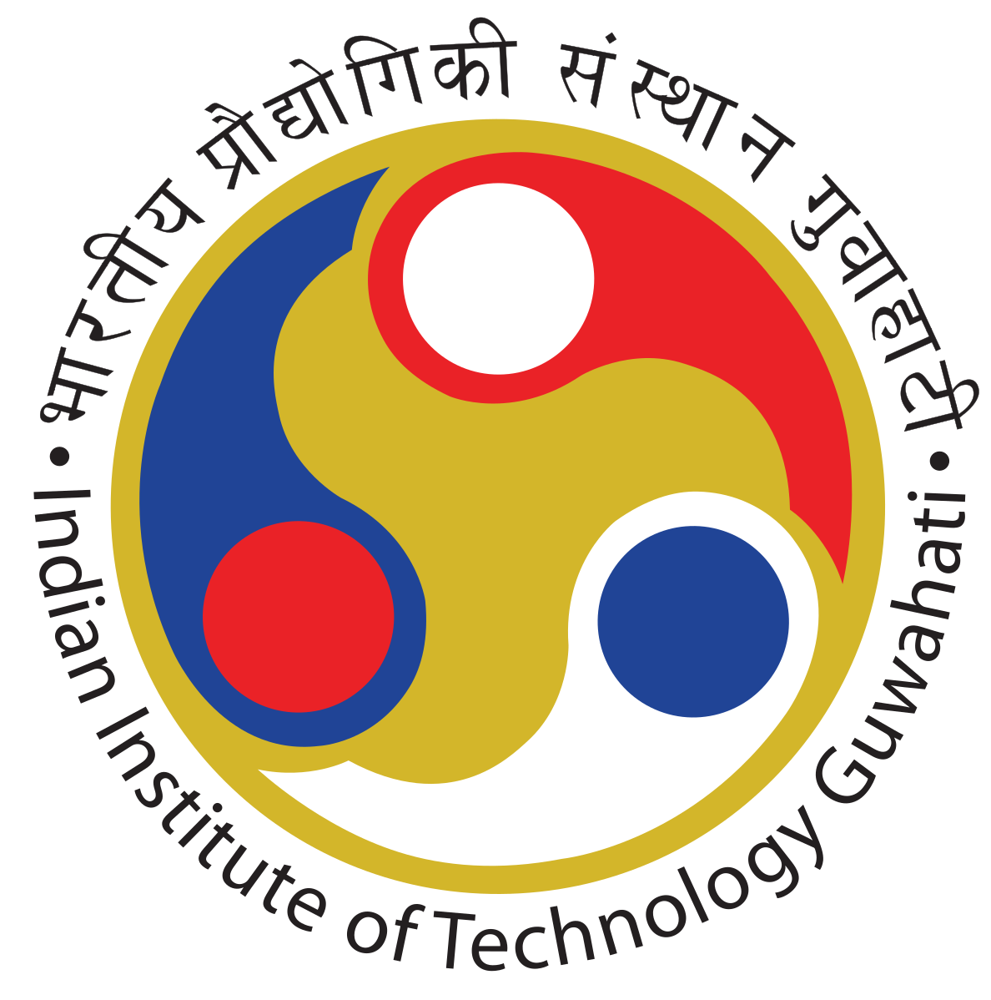
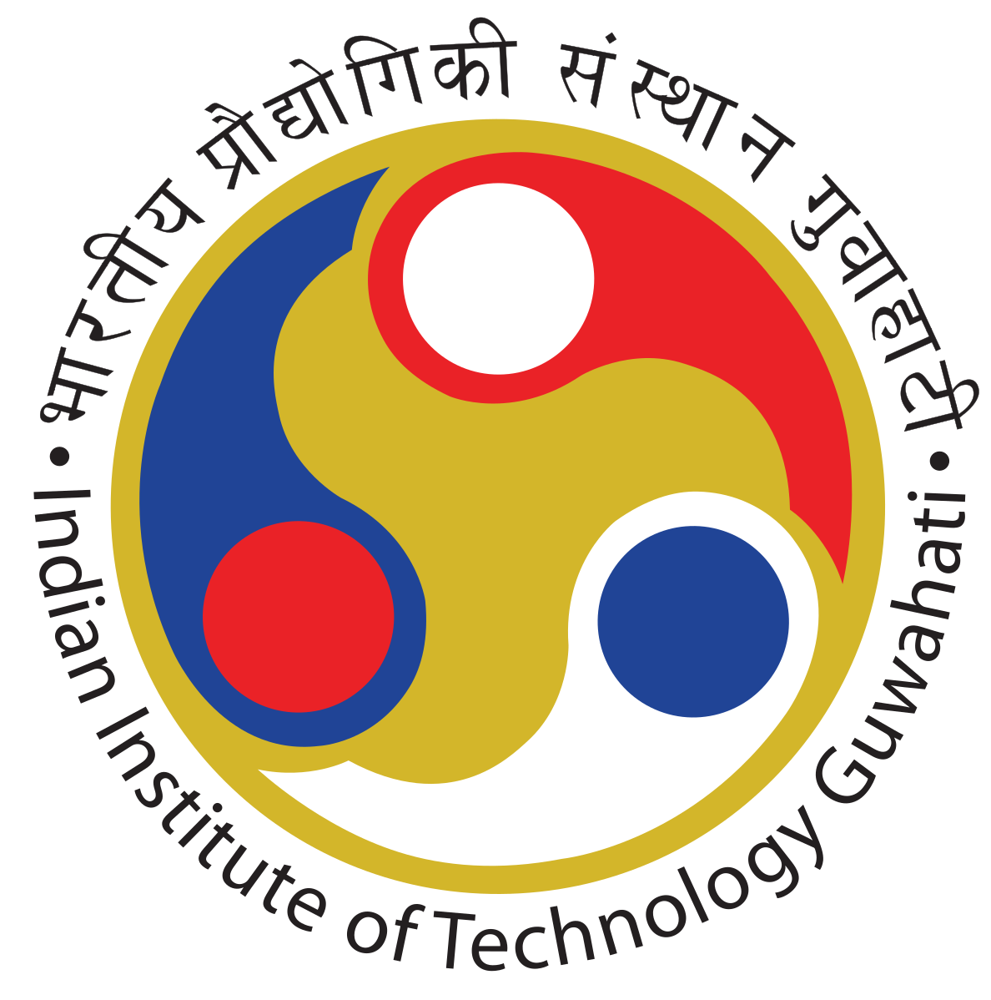
Recent News
- May 2024: Our work, Parallelized Spatiotemporal Binding, has now been accepted at ICML 2024!
- Feb 2024: Our new work, Parallelized Spatiotemporal Binding, is now on arXiv!
- Sep 2023: Joined as a research intern at NVIDIA Research collaborating with Gerry Che and Yue Wang.
- May 2023: Gave a talk at the University of Toronto AI in Robotics (AIR) seminar, focusing on representation learning for systematic generalization. YouTube link here!
- Feb 2023: We have released the code and datasets for our ICLR'23 paper Neural Systematic Binder here!
Selected Publications
Equal contributions are denoted using {}.2025
- Can Program Search Help LLMs Write Better Parallel Code?
- Gautam Singh, Arjun Guha, Bhavya Kailkhura, Harshitha Menon
- NeurIPS 2025 Workshop (DL4C)
- Dreamweaver: Learning Compositional World Representations from Pixels
- Junyeob Baek, Yi-Fu Wu, Gautam Singh, Sungjin Ahn
- ICLR 2025 [pdf]
2024
- Slot State Space Models
- Parallelized Spatiotemporal Binding
2023
- Imagine the Unseen World: A Systematic Visual Imagination Benchmark
- {Yeongbin Kim, Gautam Singh}, Junyeong Park, Caglar Gulcehre, Sungjin Ahn
- NeurIPS 2023
- Object-Centric Slot Diffusion
- Jindong Jiang, Fei Deng, Gautam Singh, Sungjin Ahn
- NeurIPS 2023 (Spotlight) [pdf]
- Neural Systematic Binder
2022
- Simple Unsupervised Object-Centric Learning for Complex and Naturalistic Videos
- Illiterate DALL-E Learns to Compose
2021
- Structured World Belief for Reinforcement Learning in POMDP
2020
- Robustifying Sequential Neural Processes
- Jaesik Yoon, Gautam Singh, Sungjin Ahn
- ICML 2020 [pdf]
- SPACE: Unsupervised Object-Oriented Scene Representation via Spatial Attention and Decomposition
2019
- Sequential Neural Processes
Media Coverage
Service
- Conference Reviewer: NeurIPS25, ICML25, ICML24, NeurIPS23, ICLR23, NeurIPS22, ICML22
- Workshop Reviewer: OSC@ICLR22